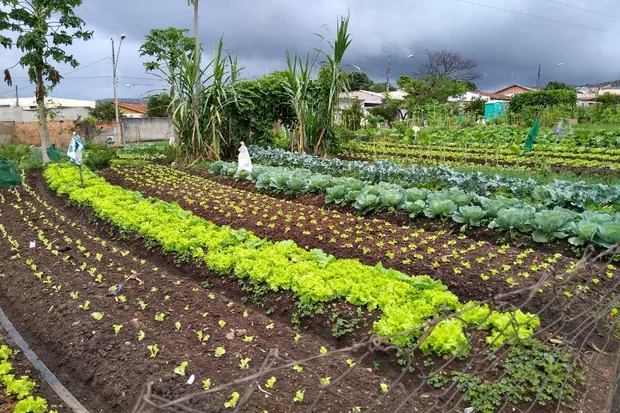
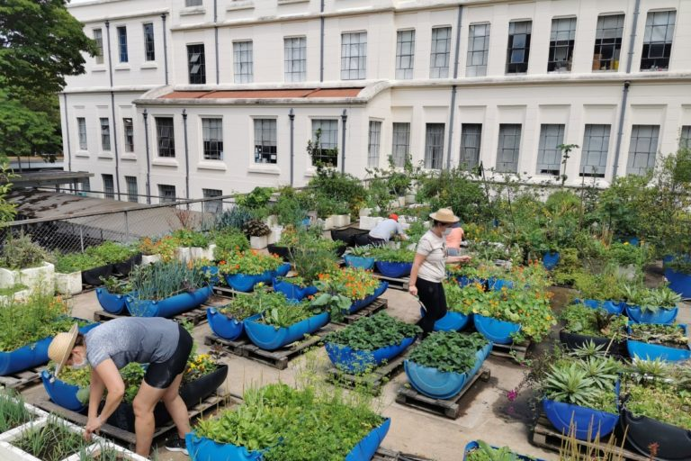
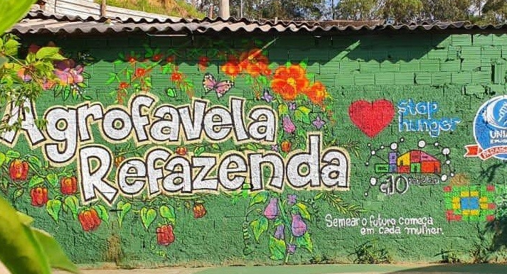

Horta Comunitária, em Sete Lagoas (MG)
Inaugurado em 15 de dezembro de 1982, o projeto das hortas comunitárias oferece fonte de renda e ocupação para cerca de 320 famílias, beneficiando indiretamente aproximadamente 2.500 pessoas.

Horta da Faculdade de Medicina da USP
Iniciada em 2013 com o cultivo de alguns temperos, a horta hoje ocupa 500 metros quadrados no terraço da faculdade e abriga uma grande diversidade de plantas.

AgroFavela-Refazenda (SP)
Criada em outubro de 2020, a horta ocupa uma área de 900 metros quadrados, onde são cultivadas hortaliças, legumes, frutas, flores e ervas. Nos canteiros, há mais de 60 tipos de verduras plantadas, e toda a produção é doada à comunidade local.